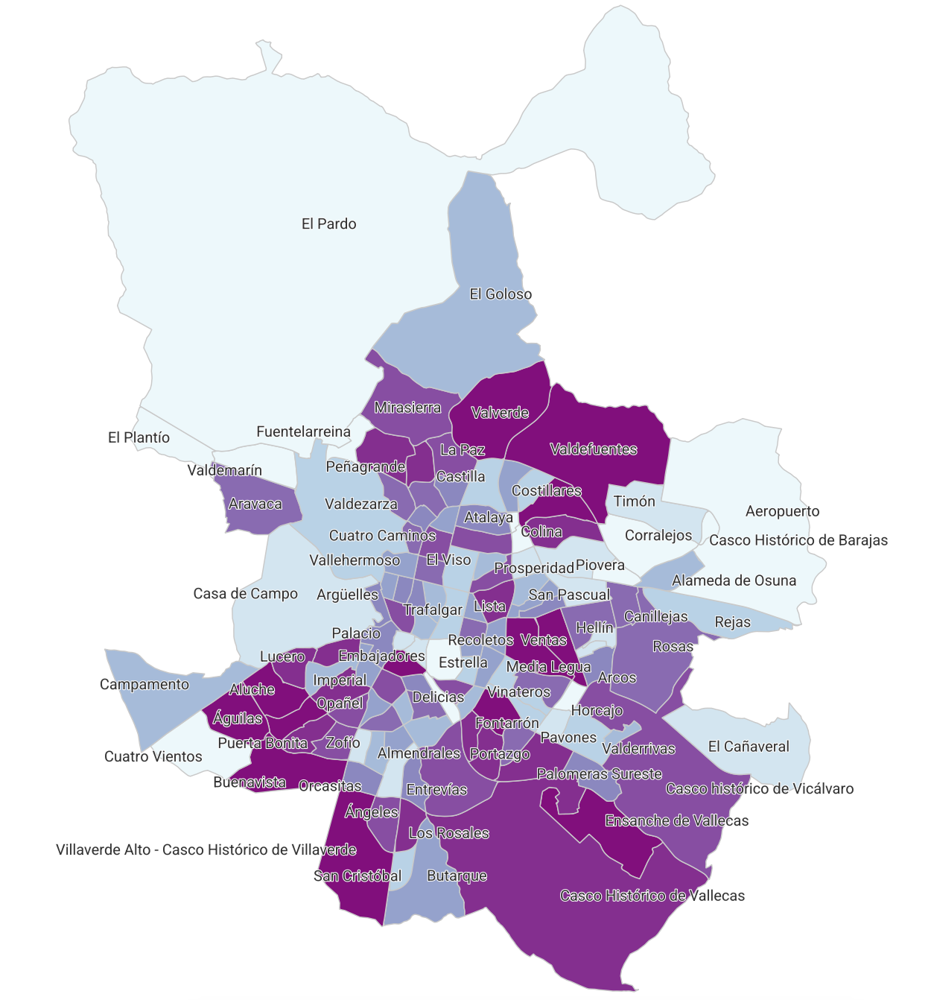

Intro to QGIS
QGIS UI
We’ll first explore the QGIS user interface, taking some time to explore:
- Main Interface: The map area, toolbars, layers panel, status bar, dock panels.
- Toolbars: These are collections of icons and tools that provide quick access to commonly used features and functions in QGIS. These can be customised based on your preferences. Some of the common toolbars provide functionality such as zooming, panning, selecting features, and editing features.
- Map View: This is the central area where your maps and layers are displayed. We’ll explore how to navigate the map view, including zooming, panning, and identifying features.
- Browser Panel: For browsing and loading data from your file system, databases, and web services.
- Layers Panel: Here, you can see a list of all the layers loaded in your project. Layers can be organised, styled, and otherwise configured.
- Attribute Table: This panel lets you view and edit the attribute data associated with your vector layers.
- Status Bar: Located at the bottom, the status bar shows information about the map and your project, such as the current map scale, the coordinate reference system, and messaging about ongoing processes.
- Plugins: QGIS can be extended with plugins. We’ll briefly touch on how to find, install, and use plugins to enhance the functionality of QGIS.
Plugins
Install the Quick Map Services (QMS) Plugin:
- From the
Pluginsmenu, selectManage and Install Plugins - Search for
QMS - Install
QuickMapServices InstallandClosethe window.
This plugin will add a new menu entry under the Web menu.
- From the
Webmenu, selectQuickMapServices, thenOSMandOSM Standard. - This will add a map to your map view.
XYZ Tiles
XYZ tiles are a popular way to represent map tile data in a simple and standardized format, allowing for efficient storage, retrieval, and display of map imagery at various scales. The “XYZ” refers to the coordinate system used to locate the tiles. “X” and “Y” represent the tile’s column and row, respectively, in a grid layout, with the origin typically at the top-left corner of the map. The “Z” parameter stands for zoom level, where higher zoom levels correspond to more detailed views (i.e., a higher resolution). This system enables GIS applications to quickly load the appropriate level of detail for a given view, making it a cornerstone of web mapping services like Google Maps and OpenStreetMap. It allows for seamless and efficient navigation across various scales and locations on a digital map.
To establish a new connection:
- On the Browser panel, right-click on
XYZ Tiles->New Connection... - Asign a name to the connection (eg. OpenStreetMap)
- Paste the respective
URL
Depending on the connection, some of other connection attributes might be required (eg. Authentication details)
We reccomend you establish at least the following connections: - OpenStreetMap : https://tile.openstreetmap.org/{z}/{x}/{y}.png - Google Imagery Hybrid : http://mt0.google.com/vt/lyrs=y&hl=en&x={x}&y={y}&z={z}&s=Ga
Useful list of many others Tiles. https://qms.nextgis.com Note, make sure you navigate to the TMS section and the reported status = works (symbolised with the green dot).
{kind=link}
Datasets
Download the municipal neighbourhoods as a SHP file: Barrios municipales de Madrid
Download the population by district and neighbourhood dataset as a CSV file: Población por distrito y barrio a 1 de enero
Coordinate Reference Systems
Geospatial data is represented using a coordinate reference system (CRS). QGIS will ordinarily detect this information automatically. However, it can display information in any selected CRS, so you can open multiple files in different CRSs and these will display correctly. This is because QGIS will reproject each respective file into the map’s currently selected CRS system.
In the lower right corner of the status bar at the bottom of the screen:
- Select the CRS button to open the project’s CRS configuration.
- Search for CRS code
3857, then select it,Apply, andOK.
Hint: When using OSM base maps, the base maps will render more performantly in the Web Mercator projection (
3857). This is because QGIS then doesn’t need to dynamically reproject the map tiles out of their native3857projection.
Loading Data
Load your first dataset by dragging and dropping the shapefile (the downloaded file ending with .shp) into your map view.
- You can toggle layer visibility and order using the Layers Panel.
- Use the
Select Featuresbutton to select a feature and see it highlighted. - Click the
Pan Map to Selectionbutton to see the map zoom to the currently selected feature - Click the
Zoom Fullbutton to return to a view of the full dataset. - Use the
Identify Featuresbutton to see attribute information for a particular feature. - Click the
Toggle Editingbutton -> this will let you delete existing features or add new features - use with caution! Don’t make any changes for now, just click theToggle Editingbutton again to exit edit mode.
Saving and exporting data
We don’t want to edit the original dataset, so let’s make a copy and work with that instead:
- Right click the layer in the Layer Panel and select
export->Save Features as - Select the
GeoPackageformat. - Select a file location on disk and give it a distinctive name such as
my_gpkg. - Select
3035for the CRS projection - Check that
Add saved file to mapat the bottom of the window is selected - Select
OK - The file will be saved and will automatically load into your map.
- Remove the original
SHPfile from your Layers Panel since it is no longer needed. This can be done with theRemove Layerbutton.
Attributes
Attributes in GIS layers provide additional information about the spatial features in the data. They include text, numbers, dates, or images. Attributes help add context to the geographic elements, enabling better analysis and visualization. They can be used to filter, classify, and symbolize features based on their characteristics. Attributes play a crucial role in data analysis, allowing us to gain insights, make comparisons, and create meaningful visual representations.
Using the Municipal Boundaries my_gpkg dataset:
- Open the attribute table for the neighbourhood boundaries by right clicking on the layer in the Layers Panel and selecting
Attribute Table. From the Attribute table you can try the same steps you tried for the map view (selecting, zooming to, editing). - Toggle Editing Mode by pressing the
Toggle Editing Modebutton. - Click on the
New Fieldbutton in the toolbar - Set the Name as
areaand the type asDecimal number, thenOK. - Check that no rows are selected (otherwise the calculation only applies to the selected rows).
- Open the Field Calculator by clicking its icon (abacus symbol) in the toolbar.
- Select
Update existing fieldand select theareacolumn. - In the
Expressionpane, enter$area, then press the blue forward button below to preview the results of the calculation. - Press
OKand check that your area column has been updated. - Press the
Save editsbutton to save your calculation. - Turn off editing mode.
We’ll now add another column, this time we’ll use another column as input and we will transform the data from a text to an integer.
- Turn editing mode on
- Open the Field Calculator
- This time select
Create a new fieldand call itcod_barrio - Check that it is an
Integertype - In the expression, enter
to_int(COD_BAR)-> this will take the text from theCOD_BARcolumn and will cast this to an integer. In the process, the data will drop the leading zero. - Apply the change, save to disk, and toggle editing to off.
Loading CSV files
- To load the CSV file we’ll go to the
Layermenu bar,Add Layer, thenAdd Delimited Text Layer. - For
File name, navigate to your CSV file and open it. If the load window dissapears (on a Mac), it might be hiding behind the main application window. - This file uses semi-colon delimeters, so select
Custom delimitersand check thatSemicolonis selected - Check that the option for
First record has field namesis selected. This will automatically use the first line of the CSV to set the attribute names. - Select
No geometry. This will load the dataset without visual geometric information. Note that if you have longitude and latitude information in CSV columns (or Eastings and Northings for projected CRS), then you can specify these columns and QGIS will generate the point geometries accordingly. - Select
AddthenClose. - Note that this layer looks different in the Layers Panel because it doesn’t have associated geometry. However, you can still view the Attribute Table.
- Right click on the layer and select
export->Save Features as. Then save the layer as a new CSV file calledmy_csv. As before, select the option to add the layer to the map, save, then remove the original input CSV from the Layers Panel.
Selecting and deleting features
- Open the attribute table for the
my_csvlayer by right clicking on the data table in the Layers Panel and selectingAttribute Table. - Order the data by clicking the
fechacolumn header, order in descending order by clicking again. - Click on the first entry (which should be
1 de enero de 2023) then hold down shift and click on the last entry with afechavalue of1 de enero de 2023. - Click the
Invert selectionbutton, this will invert the selection so you only have entries selected that are not1 de enero de 2023. - Click the
Delete selected featuresbutton. - Manually select the row with a
cod_distritovalue ofTodos, and delete it, since this is an aggregated row containing aggregated information for all districts. - Open the Field Calculator, and this time select to create a new field called
num_peopleas aDecimaltype. - Use the following expression to populate the field:
to_real("num_personas")- this will take the originalnum_personascolumn and will convert it from text format to numeric format, and writes it to a new column callednum_people. We can then use this numeric column for map styling. - Save and turn off editing.
Joins
- Open the Attribute Panels for both the
my_gpkgand themy_csvlayers. - We want to “Join” information from the CSV dataset to the neighbourhood boundaries using the matching identifiers in the respective
cod_barrio/cod_barriocolumns. We are now just visually inspecting the data, so you can go ahead and close the Attribute Panels when done. - Double click on the
my_gpkglayer to open the properties panel. - Click
Joinsin the left sidebar. - Click the plus button to create a new join.
- Select the
my_csvtable for theJoin layer-> the layer from which attributes will be joined tomy_gpkg. - Select the
cod_barriocolumn for theJoin field- this refers to thecod_barriocolumn in themy_csvfile. - Select the
cod_barriocolumn for theTarget field– this refers to thecod_barriocolumn in themy_gpkgfile. - Click
OKand close the layer properties. This will “weld” themy_csvcolumns onto the matchingmy_gpkggeometries so that we can view the census information using their geographic boundaries. - Reopen the Attribute Panel for the
my_gpkgdataset, you’ll see extra columns which have now joined the data from themy_csvtable into their corresponding boundaries based on the matching identifiers. - Let’s export this to a new file to
my_joined_gpkg, which will now include the joined data. - Remove
my_csvandmy_gpkgfrom the Layers Panel.
Visualisation
- Open the
my_joined_gpkglayer properties by double clicking on the layer name in the Layers Panel. - Select
Labelsin the left pane, selectSingle Labels, then select theNOMBREcolumn, then apply. This will add the Barrio names to the map. You can format labels to your heart’s content. - Select
Symbologyin the left pane. You can try use the “graduated” view option (select from the top drop-down) to view theareacolumn information (select from the “Value” drop-down) or thecsv_num_peoplecolumn information on your map. - You can use different “Mode” options - press the
Classifybutton to see how they detect different thresholds for the colour bands. - Press
Applyto see the changes on the map. - There are almost limitless options so feel free to be creative.

Resources
If you are feeling like doing a little more you can look at the QGIS mapping section and/or any of the following online materials. There is a lot that can be done with QGIS and we have just skimmed the surface!
The QGIS Tutorials and Tips is a great resource for QGIS.
For lab-work, please do the following tutorials from QGIS Tutorials and Tips in your own time to build some general familiarity with QGIS: